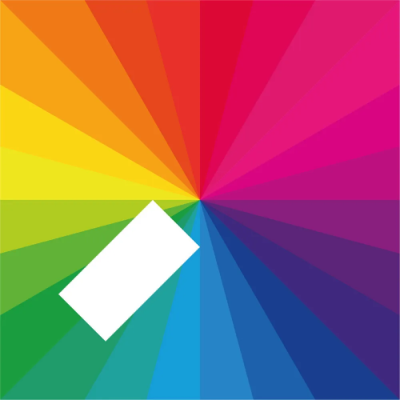
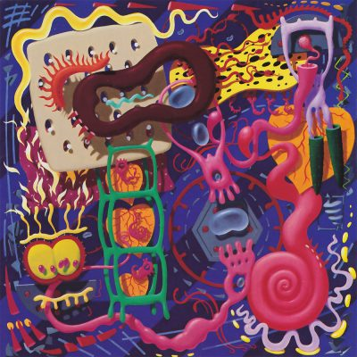
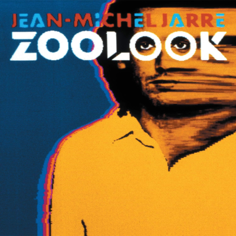
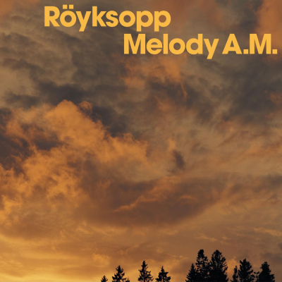
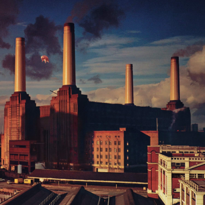

1. Jamie xx - In Colour
The debut album from Jamie xx is my favourite album due to an emotional connection I hold with the music within - it reminds me of when I was working as stage crew and often used to get the night bus home from various venues in London. With features from fellow bandmates Romy Madley-Croft and Oliver Sim, this album is a surefire hit for any fans of downbeat electronic music. I have still to see Jamie xx live, however I have seen him live as part of the xx.
For more information on this album please visit the Wikipedia page.
2. Orbital - In Sides
Orbital's fourth album is often considered their magnum opus - a more mature piece of work than their early albums, this album is more made for home listening than to be played on the dancefloor. An album for thinking, rather than moving. My personal connection to this album is due to the fact that it was my first introduction to Orbital - leant to me by a teacher at secondary school. Since getting in to Orbital I have seen them live five times, and met them once.
For more information on this album please visit the Wikipedia page.
3. Jean-Michel Jarre - Zoolook
Often hailed as one of the fore-fathers of electronic music - Jean-Michel Jarre's fourth mainstream album is a masterpiece of found sounds and musique concrete. Taking samples of various languages spoken around the world, Jean-Michel Jarre creates sometimes mournful (Ethnicolor) and sometimes joyful (the title track) music that is truly unique. I have seen Jean-Michel Jarre live four times.
For more information on this album please visit the Wikipedia page.
4. Röyksopp - Melody A.M.
Norwegian masters Röyksopp have been one of my favourite artists for nearly fifteen years. It's very hard to choose just one of their albums to single out as my favourite but I have opted for their debut album. Many will know the single Eple as it was used as the opening video on Mac OS X 10.3 Jaguar. I have seen Röyksopp live twice, as well as DJ twice. I have also met the band once.
For more information on this album please visit the Wikipedia page.
5. Pink Floyd - Animals
Progressive rock legends Pink Floyd are one of my favourite bands, and again, it's very hard to pinpoint a specific album to single out. I have opted for Animals as it is a hard-hitting, cutting criticism of the day's political atmosphere in the UK - one which hasn't really gone away, and could easily be about today if the names of individual politicans were replaced. This album is known for it's distinctive and famous album cover, depicting the then derilict Battersea Power Staation with a flying pig above it. The album is a clever mix of punk aesthetics within a prog-rock format.
For more information on this album please visit the Wikipedia page.